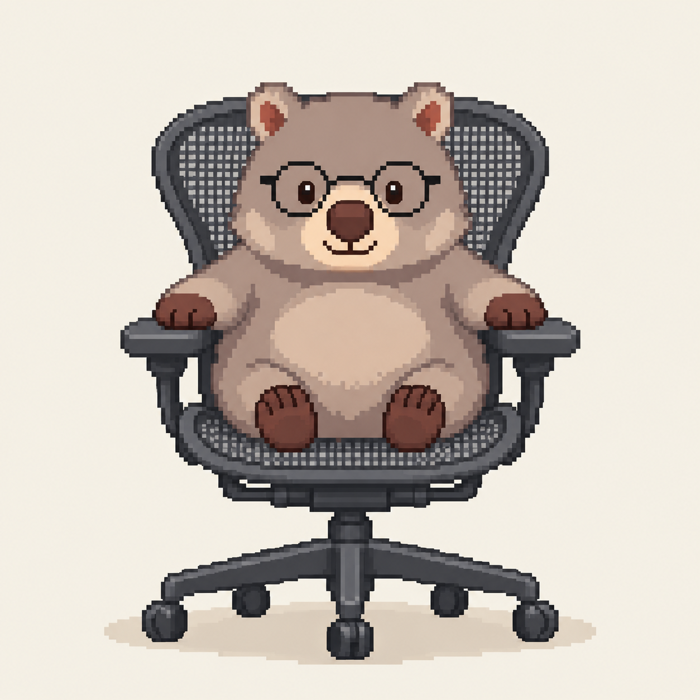
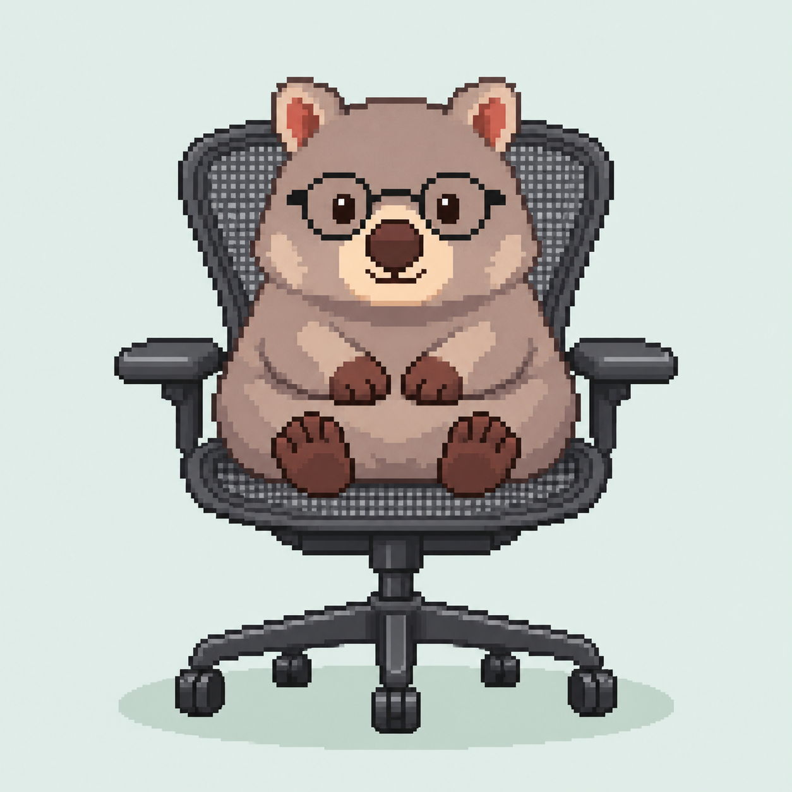
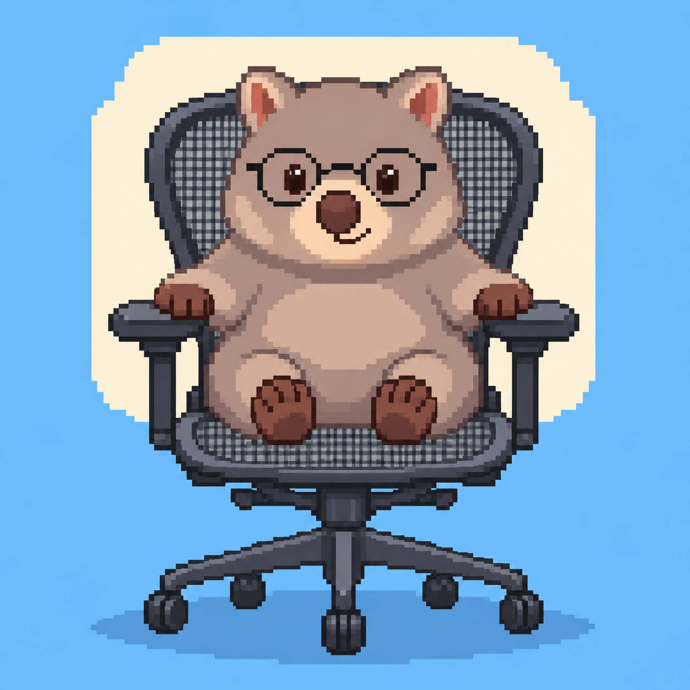
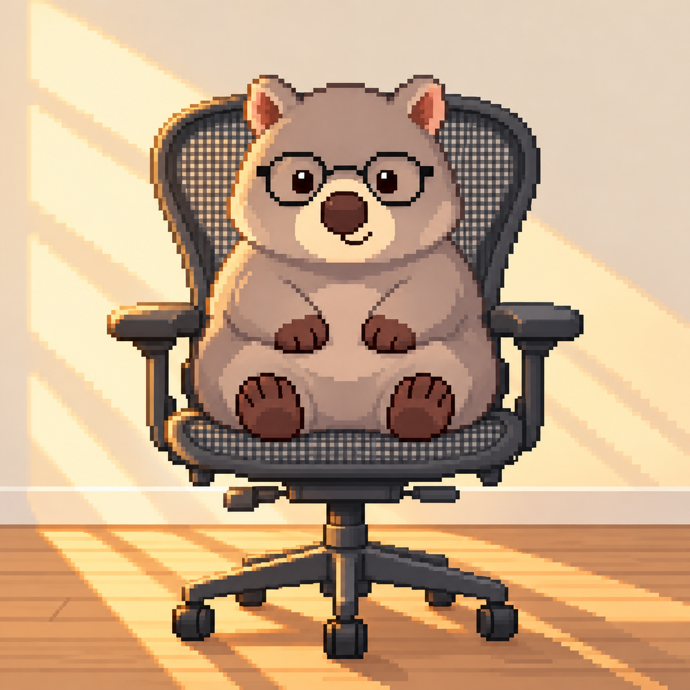
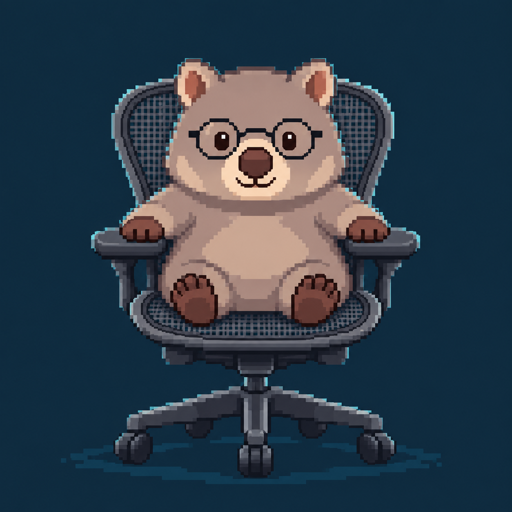
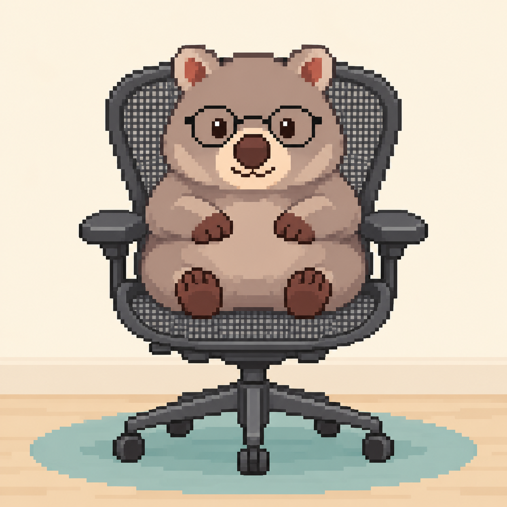
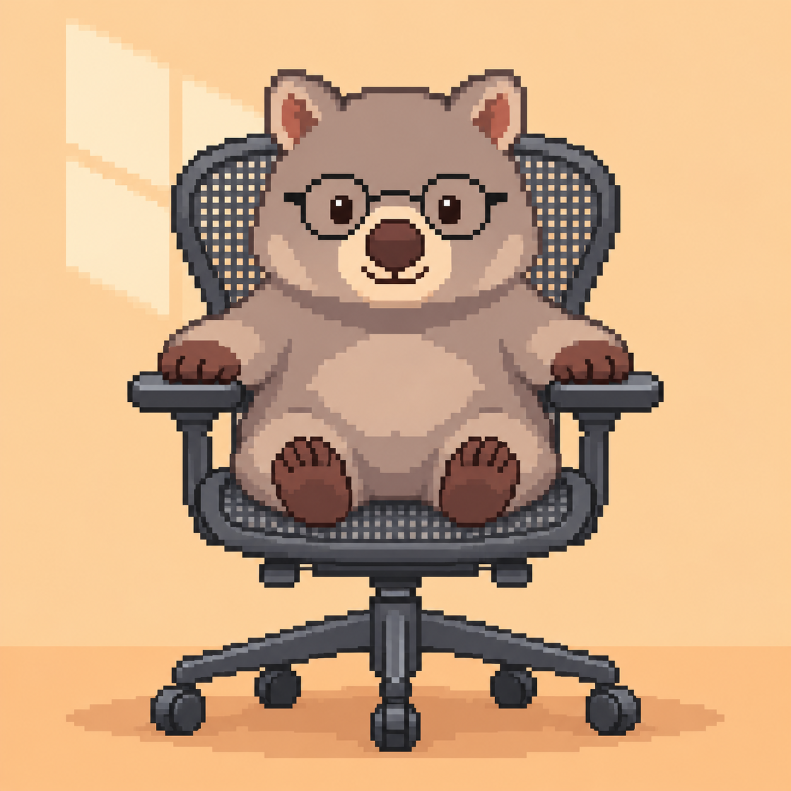
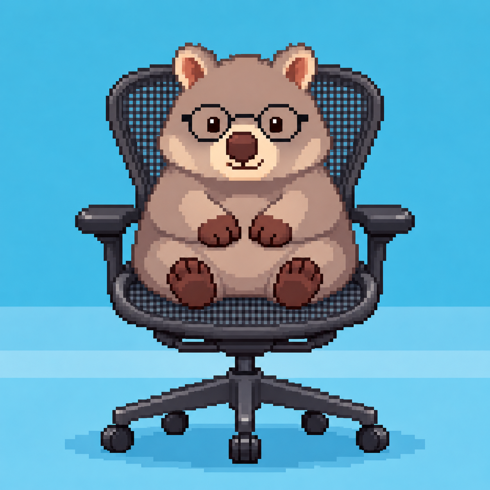
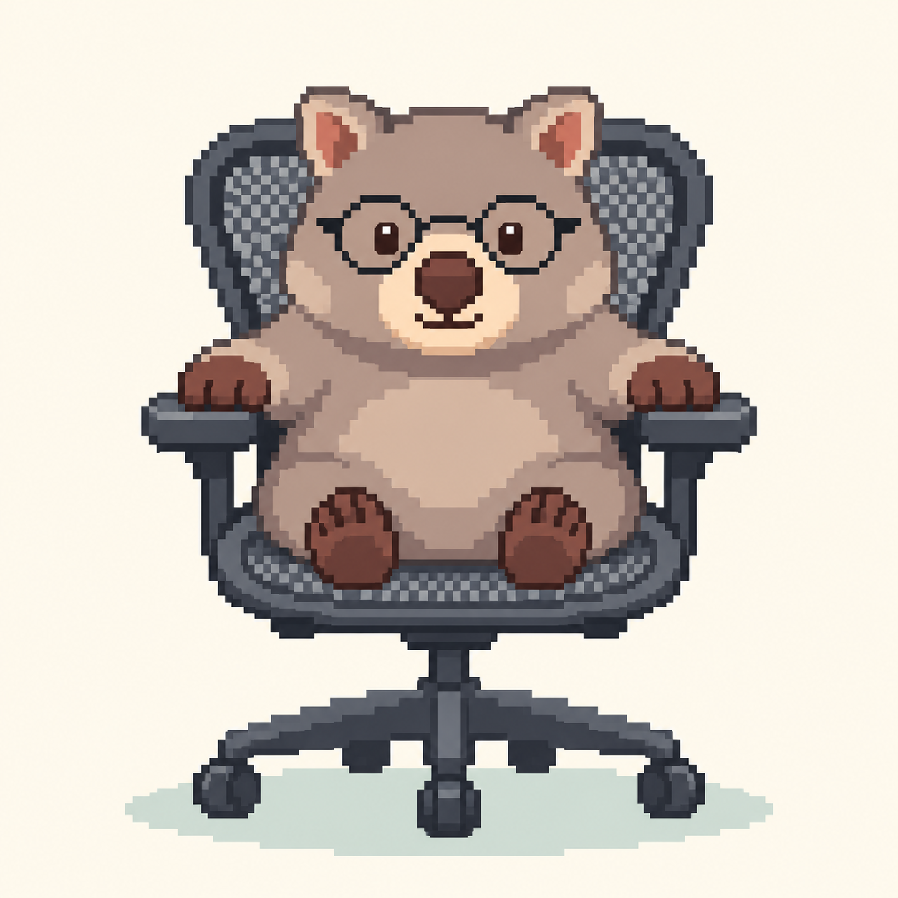
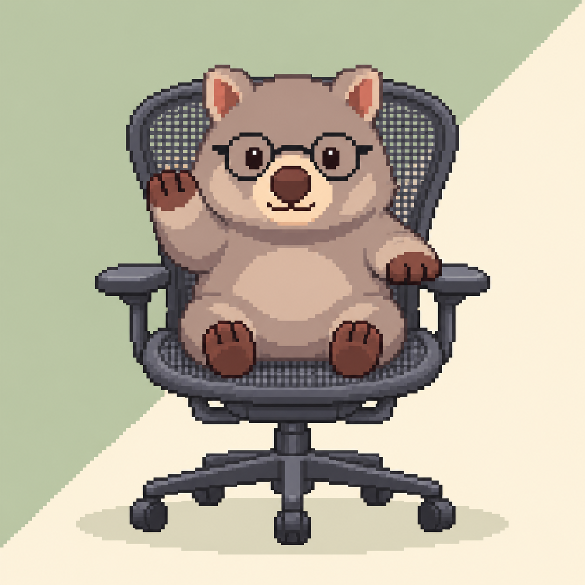

기본 정면
편안한 표정과 차분한 기본 배경.

JOHN’S SPACE / WOMBAT FRONT STUDIES
회색 털·둥근 안경·포근한 도트, 허먼밀러 메쉬 의자에 앉은 모습.
작은 미리보기로 먼저 살펴보고, 이미지를 눌러 전체 그림을 확인하세요. 확대 화면에서 이전·다음 버튼이나 좌우 방향키로 시안을 바꿀 수 있습니다.
편안한 표정과 차분한 기본 배경.

회색 털과 어울리는 차분한 세이지색.

가볍고 맑은 스카이 블루 배경.

부드러운 햇살과 따뜻한 색감.

짙은 네이비 배경의 정면 초상.

크림색 작업실 분위기와 포근한 표정.

은은한 살구빛 배경의 편안한 인상.

바다를 떠올리는 하버 블루 색감.

큰 도트로 단순하고 또렷하게 표현한 형태.

작은 앞발로 전하는 가벼운 인사.
